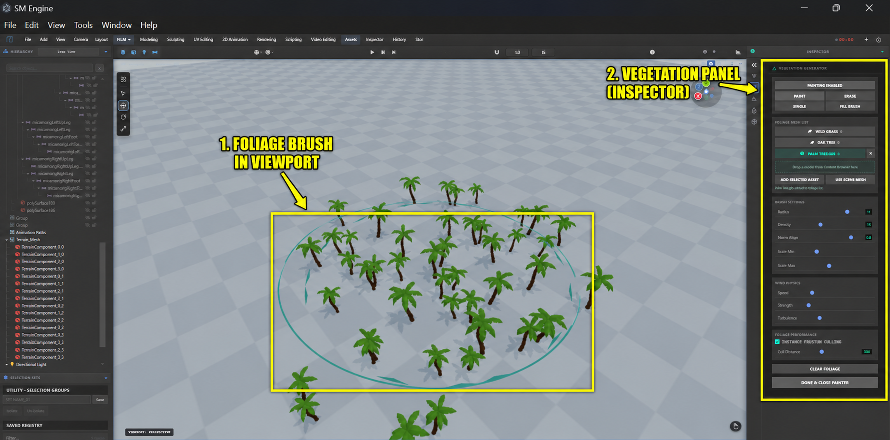

Vegetation Painting
Populate your terrain with forests and meadows using the VegetationSystem — an instanced painter with brush, fill and path scattering, per-species density limits and shader-driven wind sway. Grass and tree presets can be generated procedurally, or you can register any mesh as a species.
#vegetationPainterBtn) in the inspector
toolbar, or
the matching entry in the secondary sidebar. The vegetation painter is only available in the
TERRAIN workspace — in other workspaces the button is hidden and the foliage
group
(SM_Vegetation) is not rendered.
Workflow

- Create your terrain (see Terrain Sculpting Workspace) and make sure it is bound to the painter.
- Open the Vegetation Painter panel — a
VegetationSystemis created for the current scene/camera. - Add species from the procedural presets (grass, trees…) or import your own foliage meshes — each species registers with an instance budget (default max 5,000).
- Hit Enable Painting Tools and choose Paint, Fill or Erase.
- Brush over the terrain — instances spawn on the surface normals, align to the slope and sway in the wind shader.
- The Foliage Mesh List shows each species with its current instance count.
Species & Presets
Species are source meshes registered under an id with a max instance count. They
are
rendered with three.js InstancedMesh for performance. The built-in
VegetationPresets generate procedural low-poly grass and tree geometry on demand, so
you can
dress a landscape without any external assets.
| Method | API | Use for |
|---|---|---|
| Procedural presets | window.VegetationPresets.* |
Quick grass/tree species without assets |
| From scene mesh | registerSpeciesFromObject(id, obj, label) |
Use existing geometry (imported tree, bush) |
| Raw register | registerSpecies(id, sourceMesh, maxCount, meta) |
Low-level control with custom instance budget |
Painting Modes
- Paint — drag across the terrain;
paintStroke(hit)instantiates species inside the brush radius with slope-aware placement. - Fill — click or drag a region to cover it with the active species
(
fillStroke). - Erase — removes instances under the brush (
eraseStroke). - Blocks/props can also be scattered along an arbitrary path later via
scatterOnPath(pointsArray)(e.g. lining a road or river bank).
Wind & Rendering
Foliage materials receive a wind vertex shader via injectWindShader(material); sway
follows
grass-up / mesh-up world axes and is driven by a global time uniform updated each frame with
updateWindUniforms(time). Per-object transforms are preserved and instanced meshes
inherit
each species' material.
Scripting Reference
window.VegetationPanel.open(); // open painter (TERRAIN workspace only)
window.VegetationPanel.toggle();
window.VegetationPanel.isOpen();
window.VegetationPanel.close();
// The live system instance (created by the panel) — window.vegetationSystem
const sys = window.vegetationSystem;
sys.setEnabled(true); // works only while workspace = TERRAIN
sys.setMode('paint'); // 'paint' | 'erase'
sys.setActiveSpecies('grass');
sys.setTerrainMeshes(terrain.userData.terrainData.meshes);
sys.registerSpeciesFromObject('oak', myTreeMesh, 'Oak Tree');
sys.registerSpecies('bush', bushMesh, 2000, { scaleJitter: 0.4 });
sys.unregisterSpecies('bush');
sys.scatterOnPath([p0, p1, p2]); // line a riverbank or road
sys.rebuildInstances('grass'); // re-apply after terrain edits